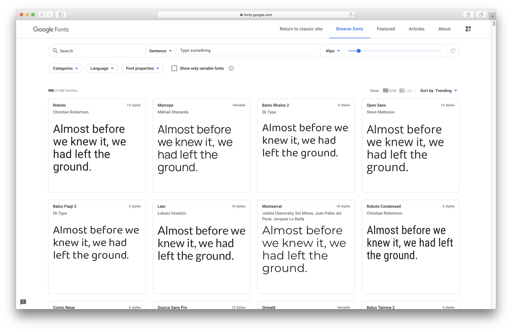
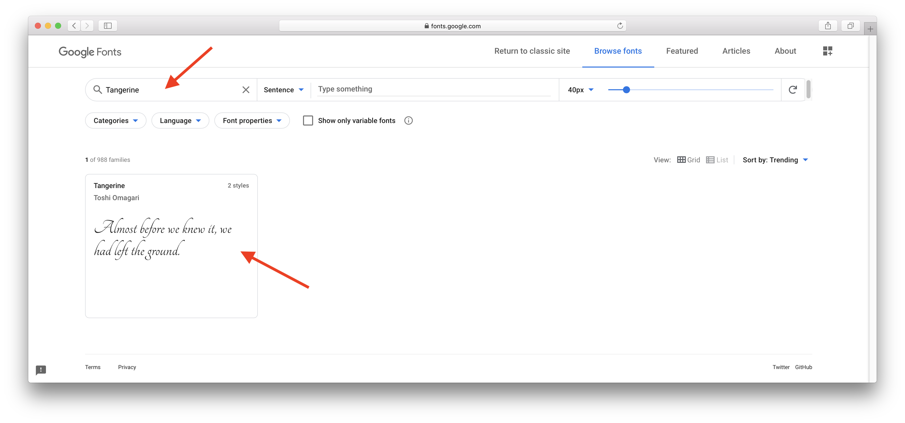
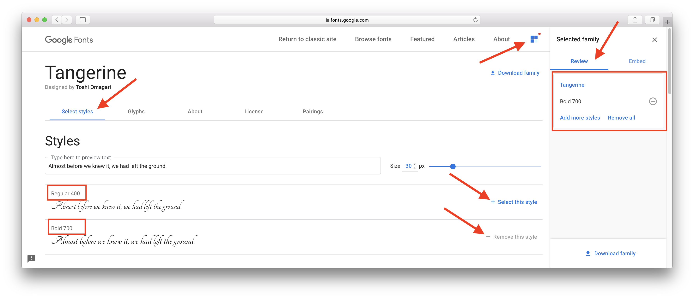
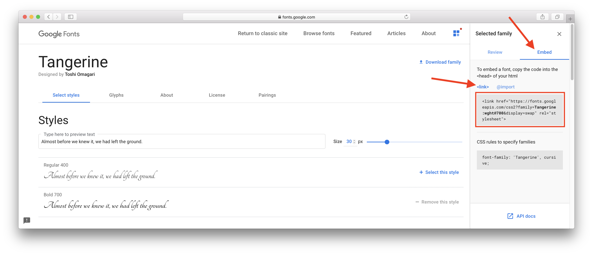
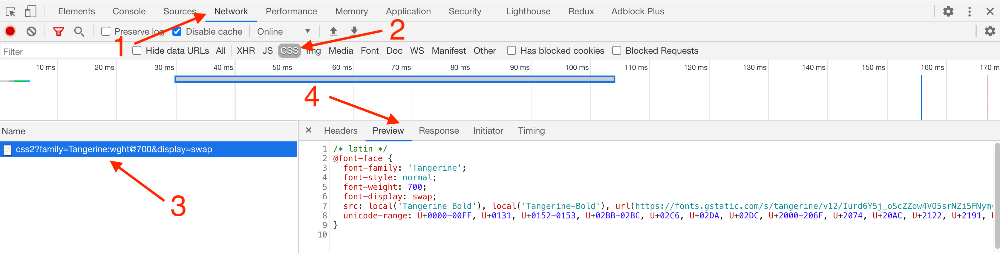

Шрифт допомагає зробити сайт яскравим і незабутнім. Мільйони сайтів з одним шрифтом «Times New Roman» були б, напевно, занадто нудні. Тому дизайнери створюють свої шрифти, а розробники можуть використовувати їх в проектах.
Цікаво: Шрифти діляться на платні і безкоштовні. Ліцензію платного шрифту необхідно купувати, а використовувати його без ліцензії загрожує порушенням авторських прав. Є багато гарних безкоштовних шрифтів, які знаходяться в загальному доступі.
Google Fonts - це сховище величезної кількості безкоштовних шрифтів. Все що необхідно зробити - це знайти потрібний шрифт, отримати на нього посилання і підключити у своєму HTML-файлі як ще одну таблицю стилів.
Скопіюйте та вставте наступний HTML-код у свій файл розмітки і відкрийте сторінку в браузері. Текст, відображений нестандартним шрифтом, нічим не відрізняється, крім зовнішнього вигляду, тому для його оформлення можна використовувати будь-які CSS-властивості.
<html>
<head>
<link
href="https://fonts.googleapis.com/css2?family=Tangerine:wght@700&display=swap"
rel="stylesheet"
/>
<style>
.title {
font-family: 'Tangerine', cursive;
}
</style>
</head>
<body>
<h1 class="title">Making the Web Beautiful!</h1>
</body>
</html>
Для того щоб підключити нестандартний безкоштовний шрифт з сервісу Google Fonts, переходимо за посиланням і потрапляємо на .сторінку пошуку
Можна перегортати галерею шрифтів і шукати ті, які сподобалися, або, якщо ім'я шрифту відоме, ввести його в поле пошуку і натиснути на картку шрифту.
На сторінці шрифту вибираємо необхідну вагу. Вибирати всі доступні жирності не потрібно, що більше варіантів, то важчим буде файл шрифту, і довше буде завантажуватися ваша веб-сторінка. Те саме і з кількістю шрифтів, звичайно обмежуються одним, максимум двома шрифтами для всього сайту.
Увага: Не всі шрифти підтримують повний діапазон жирності (від 100 до 900) і накреслень (стандартний або курсив). Дизайнер створює набір найпопулярніших значень. Якщо шрифт не підтримує певну вагу, браузер буде відображати його у найближчій доступній жирності.
Нам потрібна тільки вага 700, тому що ми підключаємо шрифт для заголовків.
На вкладці Embed копіюємо тег <link>, в якому вказано посилання на таблицю стилів шрифту, і додаємо її в шапку свого HTML-документа перед іншими стилями.
Тепер у файлі стилів можна використовувати шрифт Tangerine, вказавши його у властивості font-family.
Давайте розберемося, що саме ми підключили до HTML-документа у попередній секції.

/* latin */
@font-face {
font-family: 'Tangerine';
font-style: normal;
font-weight: 700;
font-display: swap;
src: local('Tangerine Bold'), local('Tangerine-Bold'),
url(https://fonts.gstatic.com/s/tangerine/v12/Iurd6Y5j_oScZZow4VO5srNZi5FNym499g.woff2)
format('woff2');
unicode-range: U+0000-00FF, U+0131, U+0152-0153, U+02BB-02BC, U+02C6, U+02DA,
U+02DC, U+2000-206F, U+2074, U+20AC, U+2122, U+2191, U+2193, U+2212, U+2215,
U+FEFF, U+FFFD;
}
Отже, Google Fonts повернув нам самий звичайний CSS-файл, в якому є директива @font-face - оголошення шрифту. Ця директива дозволяє вказати параметри шрифту, який підключаємо.
Корисно: Всі відомі людству символи (мов, математичні знаки тощо) зібрані і описані стандартом, що називається Unicode, в якому кожен символ має ім'я (наприклад, «latin capital letter a») і код (code point) - число від 0 до 10FFFF.